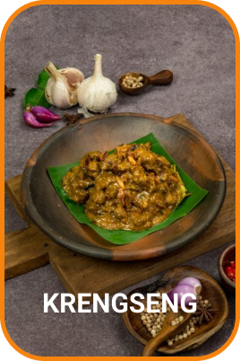
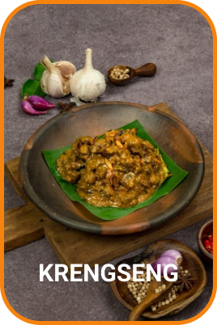

Masih maju-mundur acara aqiqah anak karena alasan biaya? atau mungkin, Ayah Bunda takut jasa katering aqiqah tidak pengalaman menyembelih hewan sesuai syariat?

Jangan sampai rasa bingung dan kekhawatiran tersebut menghalangi kesempatan melaksanakan ibadah sunnah yang membawa banyak keberkahan ini. Pelaksanaan aqiqah adalah bentuk rasa syukur kepada Allah SWT atas kelahiran buah hati. Namun sering kali kita dihadapkan pada kendala seperti:

Takut hasil masakan kambing berbau prengus
Ingin praktis, tapi takut harga yang murah malah mengorbankan kualitas
Ragu soal kehalalan proses penyembelihan
Bingung mencari jasa katering akikah yang sesuai syariat
Mari simak dulu video berikut!

Kami Punya Solusinya Sekarang Juga!
Rasulullah Shallallahu 'Alaihi Wa Sallam bersabda: ”Setiap anak tergadai dengan aqiqahnya, maka pada hari ketujuh
disembelih hewan, dicukur habis rambutnya, dan diberi nama.” (HR. Abu Dawud no. 2838)
Siap beraqiqah tapi tak
mau repot masak sendiri? Tenang saja! Sekarang Ayah Bunda bisa melaksanakan Aqiqah sesuai Sunnah dengan harga mulai
Rp 1,7 jutaan. Pilih jasa katering amanah, terpercaya, dan berpengalaman


100% Halal. Rasa Lezat. Harga Bersahabat
Barokah Aqiqah: Spesialis Aqiqah Kambing Jantan Sesuai Syari'at
Baroqah Aqiqah hadir untuk melengkapi kebahagiaan dan rasa syukur Ayah dan Bunda atas kelahiran si buah hati. Dengan pengalaman lebih dari 20 tahun, Barokah Aqiqah menawarkan jasa katering aqiqah spesialis kambing jantan yang memastikan ibadah aqiqah Anda berjalan dengan lebih afdhol, praktis, dan penuh berkah
Kenapa Harus Baroqah Aqiqah? Ini Keistimewaan Kami

Pengalaman Lebih dari 20 Tahun
Sejak tahun 2000, Barokah Aqiqah telah menjadi pilihan keluarga dalam melaksanakan aqiqah yang sesuai sunnah. Pengalaman kami membuat setiap proses jadi lebih mudah, lancar, dan tanpa ribet

Hewan Sehat dan Cukup Umur Sesuai Syariat
Nggak perlu ragu soal kualitas. Semua kambing yang kami sediakan dijamin sehat, cukup umur, dan memenuhi syarat sah aqiqah. Kami spesialis dalam menyediakan kambing jantan sesuai sunnah, jadi ibadah aqiqah makin sempurna

Kemasan Menarik dan Rapih
Kami nggak cuma menyediakan jasa, tapi juga pengalaman. Dari kemasan yang elegan hingga tambahan layanan seperti kartu ucapan eksklusif dan dokumentasi proses penyembelihan, semuanya dibuat agar hidangan aqiqah makin spesial

Saksikan Proses Penyembelihan
Buat Anda yang ingin memastikan semuanya berjalan sesuai syariat, kami memberikan kesempatan untuk memilih kambing sendiri dan menyaksikan langsung proses penyembelihan. Transparansi adalah prioritas kami!
Masakan Lezat, Higienis dan Tidak Bau Prengus
Suka khawatir kambing bakal bau prengus? Tenang, masakan kami diolah dengan teknik khusus sehingga rasa enak, bebas bau, dan siap disantap tanpa masalah. Plus, pengemasannya rapi dan cocok untuk acara Anda

Tim Ahli dan Profesional
Mulai dari penyembelihan hingga pengolahan, semua dikerjakan oleh tim yang berpengalaman dan terlatih. Kami tahu betul bagaimana memberikan yang terbaik untuk ibadah aqiqah Anda

Mudah Pesan Via Whatsapp
Generasi sekarang pasti suka yang serba online. Tinggal klik, konsultasi, dan pesan lewat Whatsapp semuanya mudah dan simpel
Bisa Pilih Waktu Penyembelihan
Mau aqiqah di hari ke-7, 14, atau 21? Semua bisa! Kami fleksibel menyesuaikan waktu agar aqiqah Anda lebih mudah dan lancar
Mengapa Kami Mengutamakan Kambing Jantan

Kambing jantan maupun betina keduanya tetap sah dan diperbolehkan, akan tetapi kambing jantan memiliki keutamaan:
LEBIH AFDHAL
Mengikuti sunnah Rasulullah Shallallahu Alaihi Wa Sallam
DAGING LEBIH BANYAK
Cocok untuk berbagi keberkahan kepada lebih banyak orang
KUALITAS RAS
Fisik lebih gagah, daging lebih padat, dan rasa yang lebih nikmat
“Telah menceritakan kepada kami [Muhammad bin Abdullah bin Numair] telah menceritakan kepada kami [Hafsh bin Ghiyast] dari [Ja'far bin Muhammad] dari [Ayahnya] dari [Abu Sa'id] dia berkata: "Rasulullah Shallallahu ‘Alaihi Wa Sallam berkurban dengan seekor kambing gibas JANTAN yang bertanduk dan sekitar mulutnya berwarna hitam, kaki-kakinya berwarna hitam dan di sekitar matanya juga berwarna hitam." (HR. Ibnu Majah: 3119) Dari ‘Aisyah dan Abu Hurairah radliallahu ‘anhuma, bahwa suatu ketika Nabi Shallallahu ‘Alaihi Wa Sallam ingin berkurban, kemudian membeli dua ekor domba yang besar, gemuk, bertanduk, berwarna putih bercampur hitam, dan dikebiri. Kemudian ia menyembelihnya… (HR. Ibnu Majah dan dishahihkan Al- Albani).
Hewan jantan untuk kurban lebih afdhol dibanding hewan betina karena Nabi Shallallahu ‘Alaihi Wa Sallam dalam hadits ini menyembelih dengan gibas (domba jantan), ditambah daging jantan itu lebih thoyyib (lebih enak). Namun menyembelih kurban dengan hewan betina juga dibolehkan menurut ijma’ (kata sepakat) para ulama.
Apa yang Membuat Barokah Aqiqah Beda dari Lainnya?
Kami memiliki layanan gratis yang bukan sekedar bonus, melainkan wujud dedikasi kami memberikan pengalaman terbaik bagi keluargan Anda

Gratis Test Food
Ragu soal rasa? Cobain dulu test food dari kami, GRATIS! Kami pastikan cita rasa masakan kami lezat, bebas bau prengus, dan memanjakan lidah

Gratis Souvenir Special
Setiap pesanan aqiqah dilengkapi dengan souvenir eksklusif dari Barokah Aqiqah. Sentuhan kecil ini membuat acara Anda semakin istimewa.
Gratis Ongkir (Wilayah Jakarta Maks 35km)
Hemat waktu dan biaya! Pesanan Anda diantar langsung ke lokasi tanpa tambahan ongkos kirim. Praktis, kan?

Gratis Dokumentasi Penyembelihan
Anda tidak sempat menyaksikan prosesnya langsung? Tenang, kami siapkan dokumentasi penyembelihan dalam bentuk foto atau video asli tanpa editan. Transparansi adalah prioritas kami.
Gratis Sertifikasi Aqiqah dengan Bingkai Eksklusif
Abadikan momen spesial ini dengan sertifikat aqiqah yang sudah dilengkapi bingkai cantik. Menjadikannya kenangan indah untuk keluarga.
Gratis Undangan Digital
Bikin acara aqiqah Anda lebih modern dan praktis! Kami sediakan undangan digital berbasis web eksklusif yang mudah dibagikan ke keluarga dan kerabat
Gratis Kartu Ucapan Eksklusif
Bingung bagaimana mengungkapkan rasa syukur Anda? Kami siapkan kartu ucapan khusus dengan desain elegan yang bisa disesuaikan dengan tema acara.
Gimana, asyik kan? Silakan coba dulu tester menu yang akan dipesan! Nikmati semua kemudahan ini hanya dengan satu klik! Jangan tunda lagi, hubungi kami sekarang untuk layanan aqiqah berkah dan eksklusif.

Bukan cuma adik bayi, orang dewasa juga bisa beraqiqah lho, karena ini adalah:
Mengikuti Sunnah Rasulullah SAW
Bentuk rasa syukur dan taqarrub/pendekatan diri kepada Allwa SWT
Wujud kepedulian sosial dan sarana menjalani silahturahmi dengan orang sekitar
Hebatnya lagi, di Barokah Aqiqah, Anda bisa:
Pesan secara online dengan order via Whatsapp
Masakan diantar ke tempat Anda
Dapur pengolahan higienis dan dimasak terpisah untuk masing-masing customer
Kepala, kaki dan jeroan diolah terpisah
Masakan disajikan dengan kemasan rapi dan bergaransi
Masih ragu? Simak apa kata pelanggan kami dan biarkan bukti review yang bicara
Ayah Bunda ingin tahu apa saja paket aqiqah yang tersedia di Barokah Aqiqah? Yuk, pilih paket favorit Anda berikut:

Keterangan:
Pilihan Menu Olahan Tulang: Gulai, Tongseng dan Sop
Pilihan Menu Olahan Daging: Rendang, Semur, Kambing Goreng Cabe Ijo, Krengseng, Kare dan sate
Untuk hasil porsi sate, 1 porsi daging setara dengan 3 tusuk sate (1:3)
Jumlah Porsi Tulang sudah termasuk jeroan dan kepala
Harga di atas berlaku untuk 1 ekor kambing + masakan dalam kemasan besar
PAKET 50
Box/Bento (50 Paket)
1 Ekor Kambing Type C
BOX
Jantan Rp. 2.850.000
Betina Rp. 2.450.000
BENTO
Jantan Rp. 2.600.000
Betina Rp. 2.200.000
PAKET 80
Box/Bento (80 Paket)
1 Ekor Kambing Type C
BOX
Jantan Rp. 3.700.000
Betina Rp. 3.300.000
BENTO
Jantan Rp. 3.300.000
Betina Rp. 2.900.000
PAKET 100
Box/Bento (100 Paket)
1 Ekor Kambing Type D
BOX
Jantan Rp. 4.300.000
Betina Rp. 3.850.000
BENTO
Jantan Rp. 3.800.000
Betina Rp. 3.350.000
PAKET 125
Box/Bento (125 Paket)
1 Ekor Kambing Type D
BOX
Jantan Rp. 5.475.000
Betina Rp. 4.875.000
BENTO
Jantan Rp. 4.850.000
Betina Rp. 4.250.000
Isian Bento

Nasi putih pulen
Bihun gurih dan lezat
Kerupuk udang premium
2 macam olahan kambing
Alat makan
Isian Box

Nasi putih pulen dan padat
Bihun gurih dan lezat
Kerupuk udang jumbo premium
Puding cokelat susu murni
2 macam olahan kambing
Alat makan

Varian Menu
BAROKAH AQIQAH


 



Jangan tunda lagi raih keberkahan aqiqah si buah hati. Whatsapp kami sekarang untuk dapatkan promo spesial bulan ini!
Aqiqah Hemat, Rasa Nikmat hanya di BAROKAH AQIQAH

Pesan sekarang untuk mendapatkan diskon dan layanan gratis ongkir Klik tombol di bawah ini untuk konsultasi dan pemesanan mudah via Whatsapp
Barokah Aqiqah menawarkan berbagai pilihan paket yang disesuaikan dengan kebutuhan keluarga Anda. Mulai dari kambing berkualitas dengan harga terjangkau, cita rasa yang lezat, hingga menu nasi box yang dikemas dengan rapi dan elegan.
Dengan komitmen menjaga kualitas, kami memastikan bahwa setiap hidangan diolah sesuai syariat, higienis dan dijamin 100% halal.
Barokah Aqiqah adalah solusi jasa katering terpercaya untuk acara aqiqah maupun tasyakuran lainnya, menghadirkan kemudahan dan keberkahan bagi Anda dan keluarga.